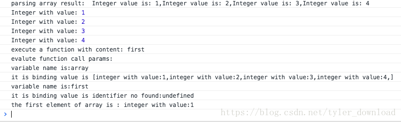
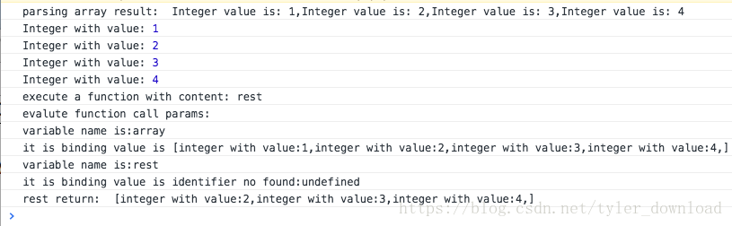
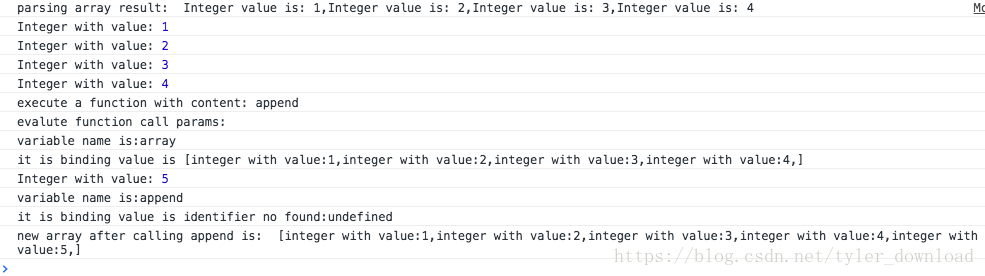
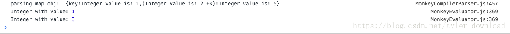

前一节，我们为Monkey语言以及其编译器增加了内置API len，以及数组数据类型，内置的len函数调用能作用到数组和字符串上，分别返回数组的元素个数和字符串的字符长度。本节我们继续增加三个能作用到数组上的内置API，这样Monkey语言能更方便的支持数组操作。
我们在这里要增加的第一个API叫first。他返回数组首个元素，也就是它的作用与myArray[0]等价，但用first获得首个元素，可以使得代码的易读性更强。我们看看它的实现，在MonkeyEvaluator.js中，增加如下代码：
builtins (name, args) {
//实现内嵌API
switch (name) {
// change 1
case "first":
if (args.length != 1) {
return this.newError("Wrong number of arguments when calling len")
}
if (args[0].type() != args[0].ARRAY_OBJ) {
return this.newError("arguments of first must be ARRAY")
}
if (args[0].elements.length > 0) {
console.log("the first element of array is :",
args[0].elements[0].inspect())
return args[0].elements[0]
}
return null
case "len":
....
}
}在builtins函数中，我们增加了对被调函数名字的检测，当调用函数名为”first”时，我们知道代码执行的是内嵌API。在函数执行时，它先检测输入参数的类型是否是数组，是的话，确保数组元素不为空，然后返回数组中的第一个元素。上面代码完成后，在页面的编辑框输入下面代码：
let array = [1,2,3,4]
first(array);点击”parsing”按钮进行解释执行后，得到结果如下：

我们的编译器成功解析数组后，在执行first调用时，成功将数组第一个元素返回。
我们继续接着实现的第二个API叫rest，它的输入参数是数组，然后返回一个除了第一个元素外的新数组，它的实现如下：
builtins (name, args) {
//实现内嵌API
switch (name) {
...
//change 2
case "rest":
if (args.length != 1) {
return this.newError("Wrong number of arguments when calling len")
}
if (args[0].type() != args[0].ARRAY_OBJ) {
return this.newError("arguments of first must be ARRAY")
}
if (args[0].elements.length > 1) {
var props = {}
//去掉第一个元素
props.elements = args[0].elements.slice(1)
var obj = new Array(props)
console.log("rest return: ", obj.inspect())
return obj
}
return null
....
}
}上面代码执行后，在编辑框中输入如下代码：
let array = [1,2,3,4];
rest(array);点击按钮”parsing”进行解释执行后，得到结果如下：

从返回结果看，函数将输入数组的第一个元素去除后，返回了一个新数组。
最后一个有关数组操作的API叫push,它的作用是将一个新元素添加到给定数组的末尾，但它并不改变就数组，而是构造一个新数组，新数组包含旧数组的所有元素，同时在末尾添加了新的元素，它的实现如下：
builtins (name, args) {
//实现内嵌API
switch (name) {
....
case "append":
if (args.length != 2) {
return this.newError("Wrong number of arguments when calling len")
}
if (args[0].type() != args[0].ARRAY_OBJ) {
return this.newError("arguments of first must be ARRAY")
}
var props = {}
props.elements = args[0].elements.slice(0)
props.elements.push(args[1])
var obj = new Array(props)
console.log("new array after calling append is: ",
obj.inspect())
return obj
....
}
}完成上面代码后，在编辑框中输入如下代码：
let array = [1,2,3,4];
append(array, 5);然后点击”parsing”后，编译器对上面代码的执行结果如下：

接下来，我们为Monkey语言增添一种最为常用的数据结构，那就是map，它能够把key和value一一对应起来，该数据结构是除了数组外，编程中最为常用的数据结构。我们希望编译器能支持下面的代码：
let myHash = {"name":"Jimmy", "age":72, "band":"Led Zeppelin"};
if (myHash["age"] == 72) {
return 1;
}编译器在读取”myHash[“age”]”时会找到它对应的数值72。任何数据类型都可以做map的key和value。为了能够执行map有关的代码，我们需要先让词法分析器识别有关字符，在MonkeyLexer.js中添加如下代码：
initTokenType() {
....
//change 4
this.LEFT_BRACE = 28
this.RIGHT_BRACE = 29
this.COLON = 30
}
getLiteralByTokenType(type) {
switch (type) {
....
// change 5
case this.LEFT_BRACE:
reuturn "{"
case this.RIGHT_BRACE:
return "}"
case this.COLON:
return ":"
}
}
nextToken () {
....
switch (this.ch) {
....
// change 6
case '{':
tok = new Token(this.LEFT_BRACE, "{", lineCount)
break
case '}':
tok = new Token(this.RIGHT_BRACE, "}", lineCount)
break
case ':':
tok = new Token(this.COLON, ":", lineCount)
break
....
}
}有了上面代码后，编译器就可以识别与map有关的字符，例如”{“,”}”和”:”。接下来我们增加对map代码的语法解析。map的语法结构可以用下面的格式来抽象表达：
{<expression>:<expression>,...<expression>:<expression>}也就是map必须以一个左括号开始，中间是表达式加一个冒号然后跟着另一个表达式，这种格式直到以右括号终止。我们先为哈希表定义一个语法节点，在MonkeyCompilerPaser.js中添加如下代码：
class HashLiteral extends Expression {
constructor(props) {
super(props)
this.token = props.token //for '{'
//对应 expression:expression
this.keys = props.keys
this.values = props.values
this.type = "HashLiteral"
}
getLiteral() {
var s = "{"
for (var i = 0; i < this.keys.length; i++) {
s += this.keys[i].getLiteral();
s += ":"
s += this.values[i].getLiteral()
if (i < this.keys.length - 1) {
s += ","
}
}
s += "}"
this.tokenLiteral = s
return s
}
}
上面语法节点的定义逻辑，会体现在接下来实现的语法解析过程中。语法解析器的职责就是，当读取到代码字符串”{“one”:1, “two”:2}”后，将其解析并生成上面定义的语法节点对象。在实现解析逻辑时，我们一定要注意对空哈希表”{}”的处理，这些边缘情况是最让人掉头发的地方所在。
我们在前序解析表中定义一个解析函数，当解析器读取到左括号时，它就从解析表中取出解析函数解读后面的字符，代码实现如下：
class MonkeyCompilerParser {
constructor(lexer) {
....
//change 8
this.prefixParseFns[this.lexer.LEFT_BRACE] =
this.parseHashLiteral
....
}
....
parseHashLiteral(caller) {
var props = {}
props.token = caller.curToken
props.keys = []
props.values = []
while (caller.peekTokenIs(caller.lexer.RIGHT_BRACE) != true) {
caller.nextToken()
//先解析expression:expression中左边的算术表达式
var key = caller.parseExpression(caller.LOWEST)
//越过中间的冒号
if (!caller.expectPeek(caller.lexer.COLON)) {
return null
}
caller.nextToken()
//解析冒号右边的表达式
var value = caller.parseExpression(caller.LOWEST)
props.keys.push(key)
props.values.push(value)
//接下来必须跟着逗号或者右括号
if (!caller.peekTokenIs(caller.lexer.RIGHT_BRACE) &&
!caller.expectPeek(caller.lexer.COMMA)) {
return null
}
}
//最后必须以右括号结尾
if (!caller.expectPeek(caller.lexer.RIGHT_BRACE)) {
return null
}
var obj = new HashLiteral(props)
console.log("parsing map obj: ", obj.getLiteral())
return obj
}
....
}完成上面代码后，在编辑框中输入如下代码：
let key = 1;
let k = 3;
let obj = {key : 1, 2 + k : 5}然后点击parsing按钮开始语法解析，执行结果如下：

从上图可以看出，我们的编译器能够正确解析map的语法代码。至于有关map对象代码的执行，我们将在下一节去实现。
更多技术信息，包括操作系统，编译器，面试算法，机器学习，人工智能，请关照我的公众号：